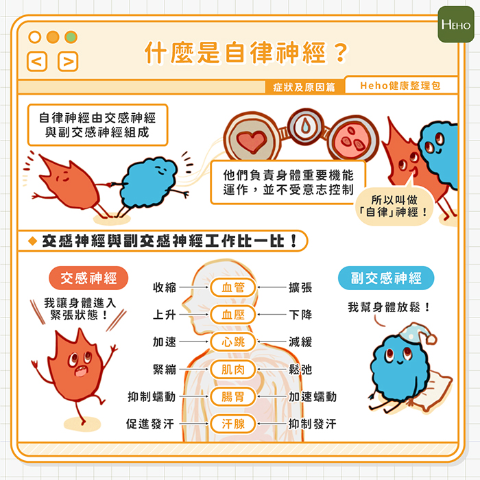
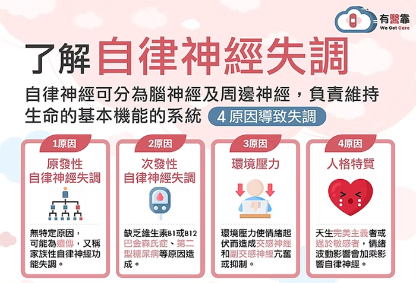
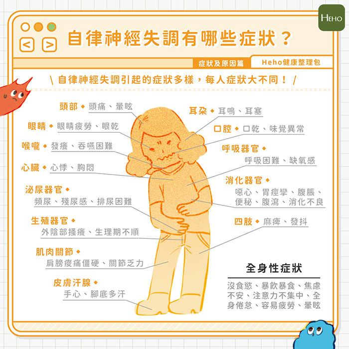

月號－健康大小事
月號－健康大小事職場如戰場，很多人長期處在龐大壓力下，有些人開始出現各式各樣的症狀，覺得自己胸悶、心悸，也有人有胃痛、胃食道逆流，看了很多醫生、跑遍各大醫院做檢查卻找不出病因，反而讓身邊的人覺得你在無病呻吟。要懷疑可能是「自律神經失調」找上門了。 |
| 什麼是自律神經呢？ |
我們的身體中存在著兩套系統，一套是可以透過大腦控制的『軀體神經系統』；另一套則是不受大腦控制，但是會受情緒、外部刺激等因素影響的『自律神經系統』。 |
|  |
而自律神經系統是由交感神經與副交感神經組成，彼此相互協調制衡，如同陰陽調合，才能使人體維持正常運作。 |
| 自律神經失調的原因有哪些? |
據統計，自律神經失調的原因，其中70%和焦慮、憂鬱與生活壓力有關，20%為營養素缺乏和荷爾蒙失調導致，10%則和腦神經退化疾病有關。 |
|  |
| 自律神經失調的症狀有哪些? |
首先要先知道的是「自律神經失調」，目前在醫學上不被列為正式的『疾病』，而是由壓力或其它疾病造成的一種或多種『症狀』。因此，自律神經失調可能引發多樣化的症狀，建議可尋求身心科或精神科的專業醫療協助，由醫師進行診斷與判斷。 |
|  |
| 自律神經失調治療3階段 |
若要穩定自律神經，必須兼顧生理跟心理 |
| 自律神經失調改善6方法 |
每個人可能或多或少，都曾有過自律神經失調的症狀，只是持續的時間及嚴重的程度不同，有些人會忽視自律神經失調，認為它不用治療或改善；有些人則覺得它是精神疾病，羞於走入診所治療。 但無論如何，自律神經失調確實是一種身體不健康的狀態，如果有相關症狀出現，建議盡早調適壓力、改善作息、規律運動，並考慮尋求專科醫師協助。 |
資料來源
1. 疲勞、不安、煩躁都是因為自律神經失調？症狀原因一次看 - Heho健康 |